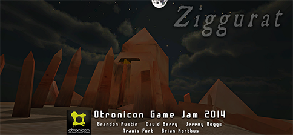

Ziggurat is an atmospheric Puzzle Platformer utilizing the Oculus Rift.
It was the winner of the 2014 Otronicon Game Jam, and was featured at the Feb 2014 Indienomicon VR Meetup
On the download page is a link to the current build of the game, it's mostly a tech demo at the moment, but we hope to take it much farther!
